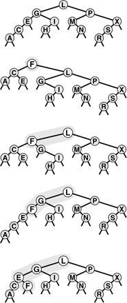
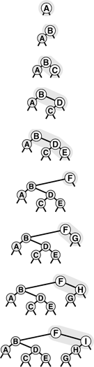
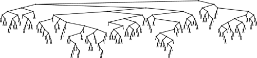

C++ Programming Robert Sedgewick - Princeton University Addison Wesley Professional Algorithms in C++, Parts 1–4: Fundamentals, Data Structure, Sorting, Searching, Third Edition
13.1. Randomized BSTs
To analyze the average-case performance costs for binary search trees, we made the assumption that the items are inserted in random order (see Section 12.6). The primary consequence of this assumption in the context of the BST algorithm is that each node in the tree is equally likely to be the one at the root, and this property also holds for the subtrees. Remarkably, it is possible to introduce randomness into the algorithm so that this property holds without any assumptions about the order in which the items are inserted. The idea is simple: When we insert a new node into a tree of N nodes, the new node should appear at the root with probability 1/(N + 1), so we simply make a randomized decision to use root insertion with that probability. Otherwise, we recursively use the method to insert the new record into the left subtree if the record's key is less than the key at the root, and into the right subtree if the record's key is greater. Program 13.2 is an implementation of this method.
Viewed nonrecursively, doing randomized insertion is equivalent to performing a standard search for the key, making a randomized decision at every step whether to continue the search or to terminate it and do root insertion. Thus, the new node could be inserted anywhere on its search path, as illustrated in Figure 13.2. This simple probabilistic combination of the standard BST algorithm with the root insertion method gives guaranteed performance in a probabilistic sense.
The final position of a new record in a randomized BST may be anywhere on the record's search path, depending on the outcome of randomized decisions made during the search. This figure shows each of the possible final positions for a record with key F when the record is inserted into a sample tree (top).

Property 13.1. Building a randomized BST is equivalent to building a standard BST from a random initial permutation of the keys. We use about 2N ln N comparisons to construct a randomized BST with N items (no matter in what order the items are presented for insertion), and about 2 ln N comparisons for searches in such a tree|
Each element is equally likely to be the root of the tree, and this property holds for both subtrees, as well. The first part of this statement is true by construction, but a careful probabilistic argument is needed to show that the root insertion method preserves randomness in the subtrees (see reference section).
|
The distinction between average-case performance for randomized BSTs and for standard BSTs is subtle, but essential. The average costs are the same (though the constant of proportionality is slightly higher for randomized trees), but for standard trees the result depends on the assumption that the items are presented for insertion in a random ordering of their keys (all orderings equally likely). This assumption is not valid in many practical applications, and therefore the significance of the randomized algorithm is that it allows us to remove the assumption, and to depend instead on the laws of probability and randomness in the random-number generator. If the items are inserted with their keys in order, or in reverse order, or any order whatever, the BST will still be random.
Program 13.2. Randomized BST insertion|
This function makes a randomized decision whether to use the root insertion method of Program 12.13 or the standard insertion method of Program 12.8. In a random BST, each of the nodes is at the root with equal probability; so we get random trees by putting a new node at the root of a tree of size N with probability 1/(N + 1).
private:
void insertR(link& h, Item x)
{ if (h == 0) { h = new node(x); return; }
if (rand() < RAND_MAX/(h->N+1))
{ insertT(h, x); return; }
if (x.key() < h->item.key())
insertR(h->l, x);
else insertR(h->r, x);
h->N++;
}
public:
void insert(Item x)
{ insertR(head, x); }
|
Figure 13.3 depicts the construction of a randomized tree for an example set of keys. Since the decisions made by the algorithm are randomized, the sequence of trees is likely to be different each time that we run the algorithm. Figure 13.4 shows that a randomized tree constructed from a set of items with keys in increasing order looks to have the same properties as a standard BST constructed from randomly ordered items (cf. Figure 12.8).
This sequence depicts the insertion of the keys A B C D E F G H I into an initially empty BST, with randomized insertion. The tree at the bottom appears to have been built with the standard BST algorithm, with the same keys inserted in random order.

This BST is the result of inserting 200 keys in increasing order into an initially empty tree, using randomized insertion. The tree appears to have been built from randomly ordered keys (see Figure 12.8).

There is still a chance that the random number generator could lead to the wrong decision at every opportunity, and thus leave us with poorly balanced trees, but we can analyze this chance mathematically and prove it to be vanishingly small.
Property 13.2. The probability that the construction cost of a randomized BST is more than a factor of α times the average is less than e–α|
This result and similar ones with the same character are implied by a general solution to probabilistic recurrence relations that was developed by Karp in 1995 (see reference section).
|
For example, it takes about 2.3 million comparisons to build a randomized BST of 100,000 nodes, but the probability that the number of comparisons will be more than 23 million is much less than 0.01 percent. Such a performance guarantee is more than adequate for meeting the practical requirements of processing real data sets of this size. When using a standard BST for such a task, we cannot provide such a guarantee: for example, we are subject to performance problems if there is significant order in the data, which is unlikely in random data, but certainly would not be unusual in real data, for a host of reasons.
A result analogous to Property 13.2 also holds for the running time of quicksort, by the same argument. But the result is more important here, because it also implies that the cost of searching in the tree is close to the average. Regardless of any extra costs in constructing the trees, we can use the standard BST implementation to perform search operations, with costs that depend only on the shape of the trees, and no extra costs at all for balancing. This property is important in typical applications, where search operations are far more numerous than are any others. For example, the 100,000-node BST described in the previous paragraph might hold a telephone directory, and might be used for millions of searches. We can be nearly certain that each search will be within a small constant factor of the average cost of about 23 comparisons, and, for practical purposes, we do not have to worry about the possibility that a large number of searches would cost close to 100,000 comparisons, whereas with standard BSTs, we would need to be concerned.
Program 13.3. Randomized BST combination|
This function uses the same method as Program 12.17, except that it makes a randomized, rather than an arbitrary, decision about which node to use for the root in a combined tree, using probabilities that ensure that each node is equally likely to be the root. The private member function fixN updates b->N to be 1 plus the sum of the corresponding fields in the subtrees (0 for null trees).
private:
link joinR(link a, link b)
{
if (a == 0) return b;
if (b == 0) return a;
insertR(b, a->item);
b->l = joinR(a->l, b->l);
b->r = joinR(a->r, b->r);
delete a[;;] fixN(b); return b;
}
public:
void join(ST<Item, Key>& b)
{ int N = head->N;
if (rand()/(RAND_MAX/(N+b.head->N)+1) < N)
head = joinR(head, b.head);
else head = joinR(b.head, head); }
|
One of the main drawbacks to randomized insertion is the cost of generating random numbers at every node during every insertion. A high-quality system-supported random number generator might work hard to produce pseudo-random numbers with more randomness than randomized BSTs require, so constructing a randomized BST might be slower than constructing a standard BST in certain practical situations (for example, if the assumption that the items are in random order is valid). As we did with quicksort, we can reduce this cost by using numbers that are less than perfectly random, but that are cheap to generate and are sufficiently similar to random numbers that they achieve the goal of avoiding the bad worst case for BSTs for key insertion sequences that are likely to arise in practice (see Exercise 13.14).
Program 13.4. Deletion in a randomized BST|
We use the same remove function as we did for standard BSTs (see Program 12.16), but replace the joinLR function with the one shown here, which makes a randomized, rather than an arbitrary, decision about whether to replace the deleted node with the predecessor or the successor, using probabilities that ensure that each node in the resulting tree is equally likely to be the root. To properly maintain the node counts, we also need to include a call to fixN (see Program 13.3) for h as the last statement in removeR.
link joinLR(link a, link b)
{
if (a == 0) return b;
if (b == 0) return a;
if (rand()/(RAND_MAX/(a->N+b->N)+1) < a->N)
{ a->r = joinLR(a->r, b); return a; }
else { b->l = joinLR(a, b->l); return b; }
}
|
Another potential drawback of randomized BSTs is that they need to have a field in each node for the number of nodes in that node's subtree. The extra space required for this field may be a liability for large trees. On the other hand, as we discussed in Section 12.9, this field may be needed for other reasons—for example, to support the select operation, or to provide a check on the integrity of the data structure. In such cases, randomized BSTs incur no extra space cost, and are an attractive choice.
The basic guiding principle of preserving randomness in the trees also leads to efficient implementations of the remove, join, and other symbol-table ADT operations, still producing random trees.
To join an N-node tree with an M-node tree, we use the basic method from Chapter 12, except that we make a randomized decision to choose the root based on reasoning that the root of the combined tree must come from the N-node tree with probability N/(M+N) and from the M-node tree with probability M/(M+N). Program 13.3 is an implementation of this operation.
In the same way, we replace the arbitrary decision in the remove algorithm by a randomized one, as shown in Program 13.4. This method corresponds to an option that we did not consider for deleting nodes in standard BSTs because it would seem—in the absence of randomization—to lead to unbalanced trees (see Exercise 13.21).
Property 13.3. Making a tree with an arbitrary sequence of randomized insert, remove, and join operations is equivalent to building a standard BST from a random permutation of the keys in the tree|
As it is for Property 13.1, a careful probabilistic argument is needed to establish this fact (see reference section).
|
Proving facts about probabilistic algorithms requires having a good understanding of probability theory, but understanding these proofs is not necessarily a requirement for programmers using the algorithms. A careful programmer will check claims such as Property 13.3 no matter how they are proved (to check, for example, the quality of the random-number generator or other properties of the implementation), and therefore can use these methods with confidence. Randomized BSTs are perhaps the easiest way to support a full symbol-table ADT with near-optimal performance guarantees; they are therefore useful for many practical applications.
Exercises |  13.8 Draw the randomized BST that results when you insert items with the keys E A S Y Q U T I O N in that order into an initially empty tree, assuming a bad randomization function that results in the root insertion option being taken whenever the tree size is odd.
13.8 Draw the randomized BST that results when you insert items with the keys E A S Y Q U T I O N in that order into an initially empty tree, assuming a bad randomization function that results in the root insertion option being taken whenever the tree size is odd.
| | 13.9 Write a driver program that performs the following experiment 1000 times, for N = 10 and 100: Insert items with keys 0 through N - 1 (in that order) into an initially empty randomized BST using Program 13.2. Then print, for each N, the x2 statistic for the hypothesis that each key falls at the root with probability 1/N (see Exercise 14.5). | | | |  13.10 Give the probability that F lands in each of the positions depicted in Figure 13.2. 13.10 Give the probability that F lands in each of the positions depicted in Figure 13.2.
| | 13.11 Write a program to compute the probability that a randomized insertion ends at one of the internal nodes in a given tree, for each of the nodes on the search path. | | 13.12 Write a program to compute the probability that a randomized insertion ends at one of the external nodes of a given tree. | | 13.13 Implement a nonrecursive version of the randomized insertion function in Program 13.2. | | 13.14 Draw the randomized BST that results when you insert items with the keys E A S Y Q U T I O N in that order into an initially empty tree, using a version of Program 13.2 where you replace the expression involving rand() with the test (111 % h->N) == 3 to decide to switch to root insertion. | | 13.15 Do Exercise 13.9 for a version of Program 13.2 where you replace the expression involving rand() with the test (111 % h->N) == 3 to decide to switch to root insertion. | | 13.16 Show the sequence of randomized decisions that would result in the keys E A S Y Q U T I O N being built into a degenerate tree (keys in order, left links null). What is the probability that this event will happen? | | 13.17 Could every BST containing the keys E A S Y Q U T I O N be constructed by some sequence of randomized decisions when those keys are inserted in that order into an initially empty tree? Explain your answer. | | 13.18 Run empirical studies to compute the average and standard deviation of the number of comparisons used for search hits and for search misses in a randomized BST built by inserting N random keys into an initially empty tree, for N = 103, 104, 105, and 106. | | 13.19 Draw the BST that results from using Program 13.4 to delete the Q from your tree in Exercise 13.14, using the test (111 % (a->N + b->N)) < a->N to decide to join with a at the root. | | 13.20 Draw the BST that results when you insert items with the keys E A S Y into one initially empty tree, and items with the keys Q U E S T I O N into another initially empty tree, then combine the result, using Program 13.3 with the test described in Exercise 13.19. | | 13.21 Draw the BST that results when you insert items with the keys E A S Y Q U T I O N in that order into an initially empty tree, then use Program 13.4 to delete the Q, assuming a bad randomization function that always returns 0. | | 13.22 Run experiments to determine how the height of a BST grows as a long sequence of alternating random insertions and deletions using Programs 13.2 and 13.3 is made in a tree of N nodes, for N = 10, 100, and 1000, and for N2 insertion–deletion pairs for each N. | | | | 13.23 Compare your results from Exercise 13.22 with the result of deleting and reinserting the largest key in a random tree of N nodes using Programs 13.2 and 13.3, for N = 10, 100, and 1000, and for N2 insertion–deletion pairs for each N. | | 13.24 Instrument your program from Exercise 13.22 to determine the average number of calls to rand() that it makes per item deleted. |
|